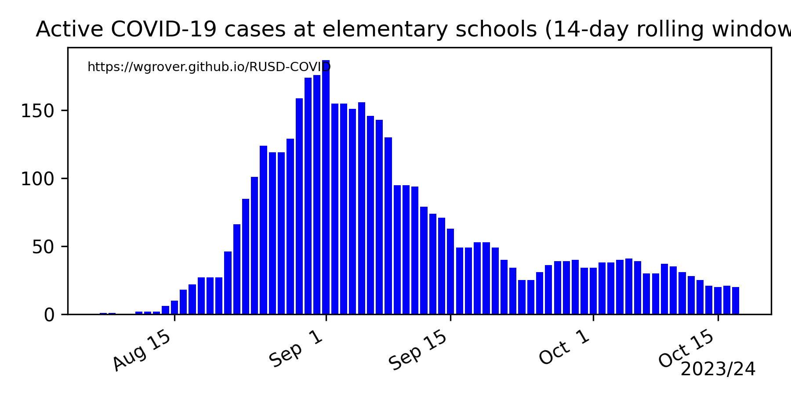
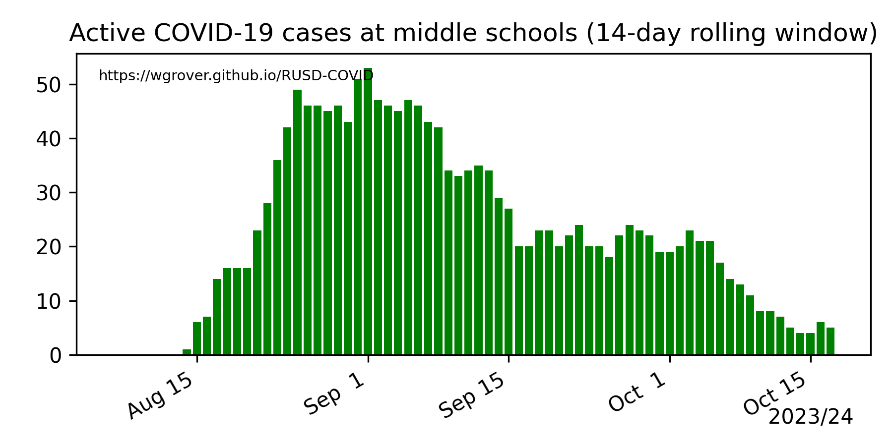
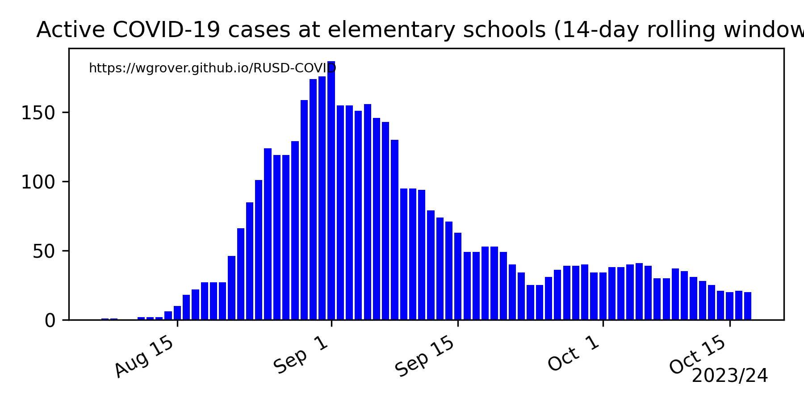
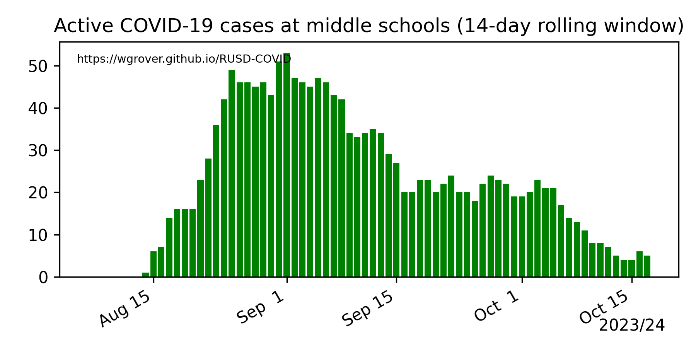

Each day's data is simply a copy of the contents of RUSD's COVID-19 Public Dashboard on that day. RUSD's dashboard is constantly updated. This page reflects the contents of the dashboard at about 8pm every night.
RUSD provides numbers of active cases during a "14-day rolling window," so each individual case might be included in up to 14 consecutive days' data. School cases include both students and staff at schools. Staff in RUSD units not directly associated with a school are included in the "Non-school cases."
This is maintained by William Grover. The Python code for scraping numbers from the RUSD dashboard and generating the plots is available in this GitHub repository.